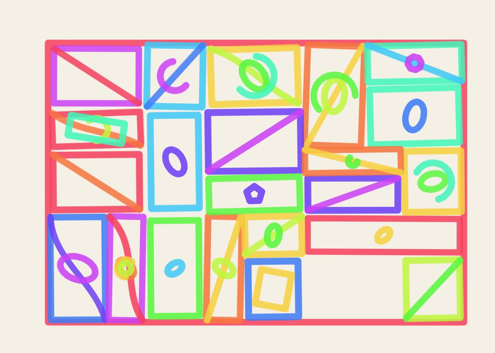
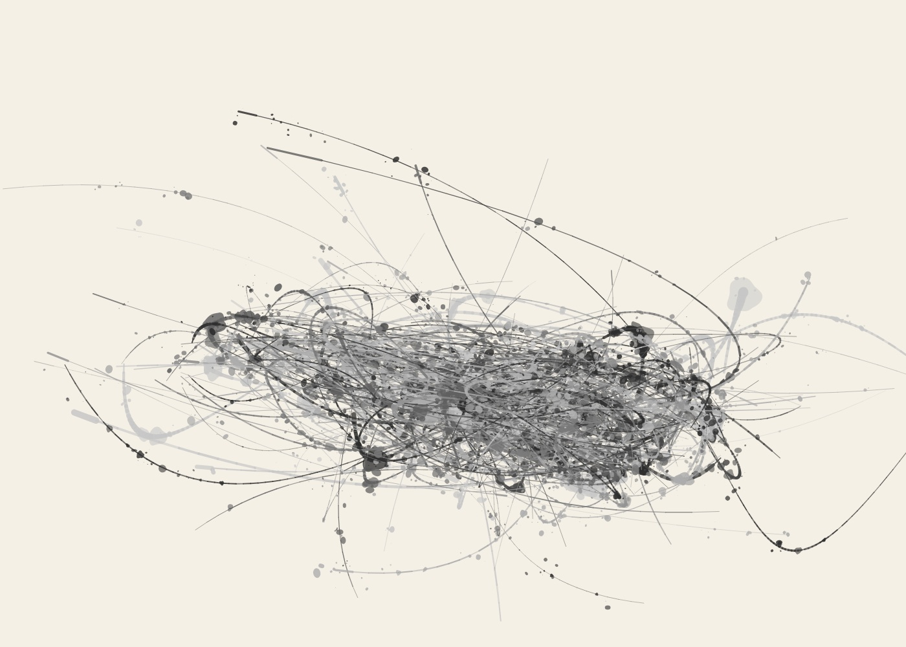

ABOUT THIS PROJECT
Previously presented as ALGO/ART. The artwork, archive and original links remain the same.
PROPORTION PIECE began with a question: how much of a drawing could be organised by a single proportion before it started to feel too orderly?
The number is φ, approximately 1.618. It turns up in the divisions, distances and directions of these compositions. Sometimes it is obvious. Elsewhere it is buried beneath a tangle of lines, a patch of colour or an expanse of untouched paper.
The canvas is 1400 × 1000 pixels (or 1000 × 1400 in portrait), not a golden rectangle: φ governs the relationships within the drawing rather than the shape of the page.

EIGHT ARTISTS, EIGHT SETS OF INSTRUCTIONS
Imagine giving eight people the same sheet of paper, ruler, compass, protractor and coloured pens. Each is told to use the golden ratio (φ ≈ 1.618) to help organise a drawing. But each receives a completely different set of instructions. These are the eight composition engines.
The golden angle is approximately 137.5°. It is one way to turn by a golden-ratio-related amount; not every engine uses it in the same way.
Orbital Studies
Tools: ruler, compass, pencil and coloured pens.
- Mark possible positions on the paper, guided by points near 38.2% and 61.8% of its width and height.
- Decide which marks should be large and important, medium, or small.
- Try different arrangements, avoiding unwanted crowding and areas meant to remain empty.
- Keep the best arrangement; draw lines, ellipses, rectangles, polygons or arcs at those positions.
- Sometimes add smaller shapes inside larger ones and relate nearby marks to the main shapes.
φ's job: placement, size, spacing and relationships. The idea: balance the whole page.
Golden Trajectories
Tools: pencil, compass, protractor and flexible curve.
- Choose a starting point or a point the drawing will move around.
- Plan a journey: perhaps a spiral, sweeping curve, fan, S-curve, intersecting paths or a cascade.
- Mark points along that journey, using golden-related growth, turns or positions.
- Join selected points with pen strokes, deliberately leaving some gaps.
- Add occasional smaller marks along the route.
φ's job: influence growth, turns, spacing and anchors. The idea: organise a picture through movement, not necessarily a complete spiral.
Recursive Divisions
Tools: ruler, set square, pencil and pens.
- Draw a large rectangle inside the page.
- Divide it into two parts, often near a 61.8% / 38.2% split.
- Choose one of the new rectangles and divide it again.
- Continue until there are enough compartments or they become too small.
- Leave some spaces blank; fill others with inset rectangles, diagonals or occasional curved shapes.
φ's job: determine divisions and nested proportions. The idea: make the composition by repeatedly cutting up space.
Radiant Systems
Tools: protractor, ruler, compass and pens.
- Put a dot on the page to act as a centre.
- Choose a direction and measure an angle from that centre.
- Mark a point at a calculated distance; draw a ray towards it.
- Rotate again, sometimes using the golden angle, and change the length of the next ray.
- Repeat, adding selected shapes at ray ends. Sometimes use several centres, or a centre beyond the page edge.
φ's job: turning, distances and centre placement. The idea: make marks radiate outwards.
Connected Fields
Tools: pencil, ruler, compass and pens.
- Scatter dots across the page using a guided arrangement.
- Make some dots important and others secondary.
- Find nearby neighbours for each dot and measure possible links.
- Prefer suitable connections, including useful golden-related lengths, while limiting crossings and overloaded dots.
- Draw the chosen links, making stronger and lighter connections; add shapes around selected dots.
φ's job: position points and influence connection lengths. The idea: the relationships matter more than the individual dots.
Growth Systems
Tools: ruler, protractor, compass and pens.
- Pick one to four starting points, sometimes on a golden-ratio position along an edge.
- Draw a first long stem from each point.
- At the tip, turn and draw new branches.
- Make each generation of branches roughly 1.618 times shorter than the previous one.
- Keep branching, occasionally adding buds. Try another direction if a branch would cross protected empty space or leave the page.
φ's job: branch lengths, angles and starting positions. The idea: every new mark grows out of an earlier mark.
Constructed Forms
Tools: ruler, set square, compass, protractor and pens.
- Choose geometric pieces: lines, ellipses, rectangles, polygons or arcs.
- Give the pieces different sizes and levels of importance.
- Arrange them as a balance, stack, axis, collision, floating group or cropped composition.
- Use measured positions, proportions and rotations to place each piece.
- Sometimes add a smaller, φ-scaled shape inside a larger one.
φ's job: shape proportions, placement, scale and rotation. The idea: assemble independent geometric objects, rather than divide one rectangle.
Automatic Marks
Tools: coloured pens, pencil and protractor.
- Choose invisible anchor points and give each an area to wander within.
- Draw a short stroke, then turn by a golden-related angle with some variation.
- Draw another stroke, changing direction and length as you go.
- Steer back towards the anchor if the marks wander too far.
- Sometimes lift the pen and start somewhere else; add a loop or leave an area untouched.
φ's job: set anchors, influence turns and stroke lengths. The idea: let the pen appear free while keeping invisible rules underneath.
The number doesn't prescribe a single picture. One artist uses it to divide a rectangle; another uses it to turn a branch; another uses it to steer a doodle. The engine chooses what to draw. The material decides how the marks appear.
The geometry is only part of the drawing. The renderer then gives it a material. Marker leaves uneven lines and dry patches. Tissue and graphite build up translucent layers and pencil grain. Watercolour spreads into paper. Oil paint gathers into heavier strokes. Action painting scatters and pours the marks across the surface.

The drawings are made by seeded JavaScript code in the browser. They aren't produced by an AI image generator. A seed gives the machine a starting point, and the controls let you change the composition without losing the ability to return to it. The same settings and renderer version can reproduce a saved drawing.
See a drawing made mark by mark →
You can see some of the structure using Show the φ, or read the settings in Describe. The editor also offers Four at once to compare four drawings, and lets you export PNG or SVG files, including paths intended for pen plotters. Physical plotter compatibility varies by machine.
The daily gallery keeps a record of what the machine makes. For the code and the longer account of its development, there is the repository and its development diary.
What interests me is the space between the measured structure and the marks on the page. The proportions can be exact; the drawing needn't look that way.
FOLLOW THE DRAWINGS
The daily gallery is generated automatically by the drawing machine, not submitted by visitors. New pieces are created from code each day and shared on Instagram, Threads and Bluesky. Drawings you make in the editor remain yours; they are not added to the daily gallery.
Try the drawing machine ↗ Browse the gallery ↗ See how a drawing is made ↗